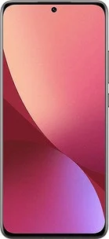

Celulare Xiaomi 12
Sobre o Celular
O Xiaomi 12 é, sem dúvida, um dos smartphones Android mais avançados e abrangentes disponíveis no mercado, graças ao seu rico equipamento e recursos multimídia avançados. Tem um grande display de 6.28 polegadas com uma resolução de 2400x1080 pixel. As funcionalidades oferecidas pelo Xiaomi 12 são muitas e inovadoras. Começando pelo 5G que permite a transferência de dados e excelente navegação na internet. Enfatizamos a excelente memória interna de 256 GB mas sem a possibilidade de expansão. O Xiaomi 12 é um produto com poucos concorrentes em termos de multimídia graças à câmera de 50 megapixels que permite ao Xiaomi 12 tirar fotos fantásticas com uma resolução de 8165x6124 pixels e gravar vídeos em 8K a espantosa resolução de 7680x4320 pixels.